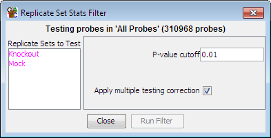

Replicate Set Filter
The replicate set filter can be used to look for a consistent effect
across a set of biological replicates. It uses either a t-test or an Anova to
assess whether a set of replicates shows a significant difference either to
one or more other sets, or from a distribution with a mean of zero.

Options
- You need to select one or more Replicate Sets from the list on the left. Only
quantitated replicate sets containing 3 or more data stores will be shown. If you
select a single set you will be comparing to a mean of 0. Selecting two sets performs a
t-test between the two sets of data and selecting more than two performs an Anova.
- You need to select a p-value cutoff. Probes where the
p-value is below the cutoff will be included in the filtered set.
- The multiple testing correction option will adjust your p-value using a Benjamini
and Hochberg correction to take account of the number of tests you have performed. Raw
p-values are only valid for a single test, and if you perform multiple tests you must
correct your p-values to get an accurate representation of the significance of your results.